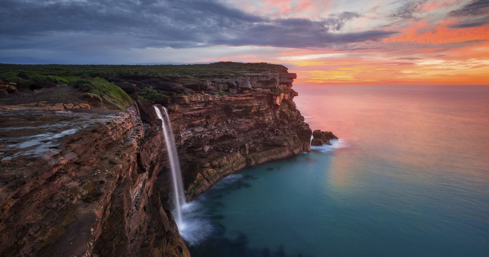

Step into the breathtaking city of Sydney, where the harmonious blend of nature's splendor and metropolitan elegance will leave you utterly captivated!
The Sydney Opera House is an iconic masterpiece of modern architecture and a world-renowned performing arts venue.
Reference: Sydney Opera House
The Sydney Harbour Bridge, affectionately known as the "Coathanger," offers breathtaking views of the city's skyline and harbor.
Reference: Sydney Harbour Bridge
The Royal National Park stands as a prominent attraction in New South Wales, celebrated not only for its serene natural beauty but also for the occurrence of a royal tale within its boundaries.
Reference: Royal National Park
Tetsuya's is a renowned fine dining restaurant, offering a unique fusion of Japanese and French cuisines in an elegant setting.
| Name | Price | Dietary Restrictions |
|---|---|---|
| Signature Degustation Menu | $250 | |
| Wagyu Beef Steak | $90 | |
| Black Truffle Sashimi | $75 |
Highly Recommended: Signature Degustation Menu
:max_bytes(150000):strip_icc():format(webp)/OperaHouse-755d893182dc4811b608eb1a99792fd7.jpg){kind=link}